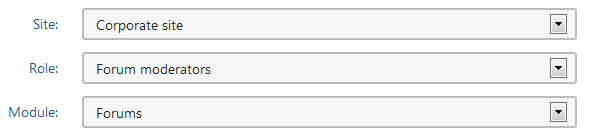
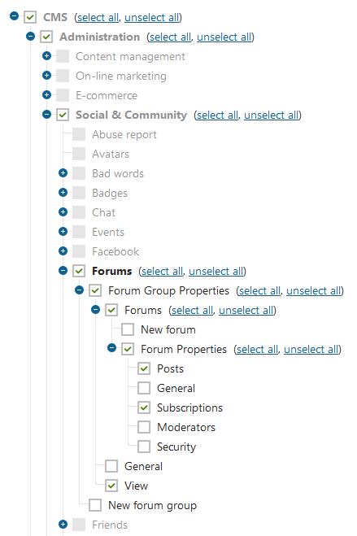
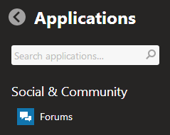

Example - UI personalization
This is an example of using the UI personalization application to restrict users from accessing parts of the user interface. In this example, you will create a new user role, called Forum moderators, and allow the role to access only the relevant interface.
When a forum moderator logs in to the administration interface, they will see only the Forums application. Inside the application, they will only have permission to view existing forum groups and manage forums and threads inside the groups.
This example does not show how to configure permissions for the different actions that users can perform with forums. The example deals only with visibility of user interface.
Preparation
Before diving into the UI configuration, create the objects that you'll be working with.
Open the Forums application and create some forum groups and forums, or use the Corporate sample site.
Open the Roles application and create a new role called Forum moderators.
Open the Users application and create a new user called Alice.
Assign Alice to your site, and then to the Forum moderators role.
Open the Permissions application, select your site and the Forum moderators role, and then select the Read and Modify permissions.
Configuring UI personalization
In this section, you will configure the system to display only relevant parts of the user interface to the user Alice.
Open the UI personalization application.
In the Site field, select your site. In the Role field, select Forum moderators.
In the Module field, select Forums.

In the UI personalization application, select the Forum moderators role and Forums moduleSelect check boxes as shown in the following image (click to enlarge).
Note that you must go up the hierarchy of UI elements and select all parent elements.

Select these check-boxes to make only the Forums application visible for the given role
Now you can log out of the administration interface and log in as Alice. In, the application list, you can see that Alice can see only the Forums application.

Only the Forums application is visible
Browse the Forums application to verify that Alice can see only the parts of the interface that you selected in UI personalization.